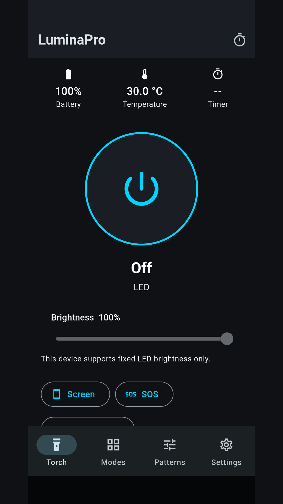
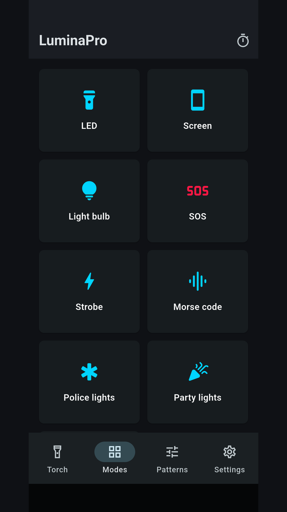
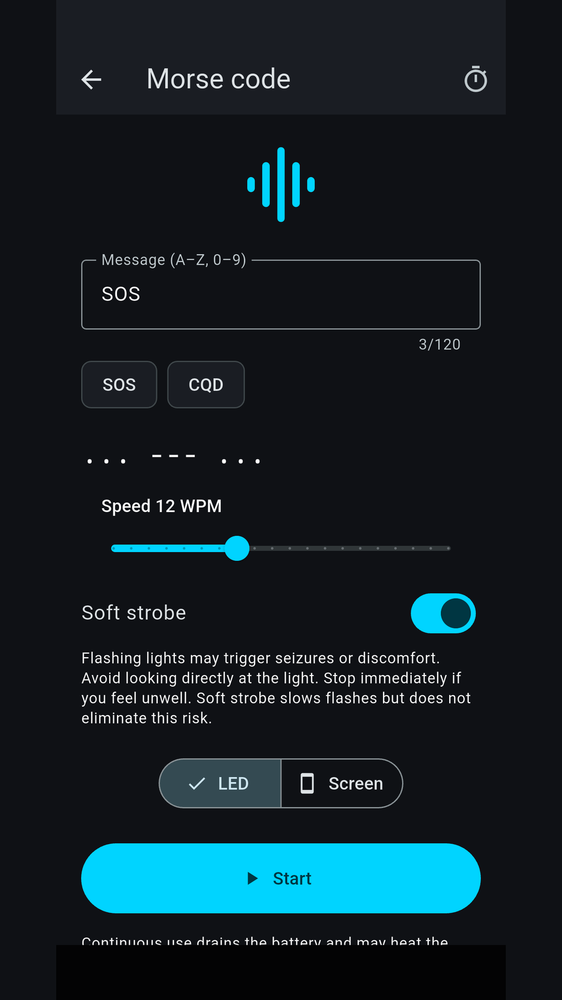

PRAXIS SCIENCE LAB / ANDROID
LuminaPro
LED torch, screen light, Morse, timers and custom light patterns.
In testing Not yet available on Google Play.
Download version 1.0.1 for testing
Development-signed APKs with test advertising only. Commercial purchases are not configured. These are not Google Play or AppGallery releases.
- Google variant - 1.0.1 QA (51.9 MiB)
- Huawei variant - 1.0.1 QA (51.7 MiB)
- SHA-256 checksums
Use the LED torch or screen light, choose a colored light bulb or reading mode, and set a timer. LuminaPro includes SOS, Morse, strobe and color modes, plus a custom light-pattern editor with JSON import and export.
Control lighting through the app, home-screen widgets, a Quick Settings tile or the active-light notification. Optional gestures work while the app is open. Battery and temperature information and thermal protection help manage lighting sessions.
LED intensity adjustment requires Android 13 or later and compatible hardware; otherwise brightness is fixed. Screen lighting stops in the background. User-started LED sessions can continue with a visible foreground service and stop when the app is removed from Recents.
All lighting functions remain free and work offline. Version 1.0.1 uses test banners only in Settings while all lighting is stopped. Commercial purchases are not configured. English, Romanian and Spanish, light/dark themes and accessibility options are included.
Developed by Traian Anghel. Published by Praxis Science Lab.
Inside the app
Actual screenshots from version 1.0.0 (before the 1.0.1 monetization update).



Language
English, Romanian and Spanish
Using the app
Flashing modes may affect people sensitive to flashing light. Stop use if uncomfortable. Do not point bright lights into eyes. LuminaPro is not certified safety equipment or an emergency service. Hardware and Android background restrictions can affect operation.
Praxis Science Lab is the publishing brand used by Traian Anghel. For support or privacy questions, email traiananghel@gmail.com. Include the app name and version. Do not send passwords, medical records, private recordings or other sensitive information.